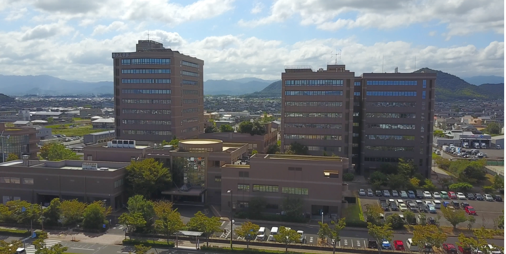
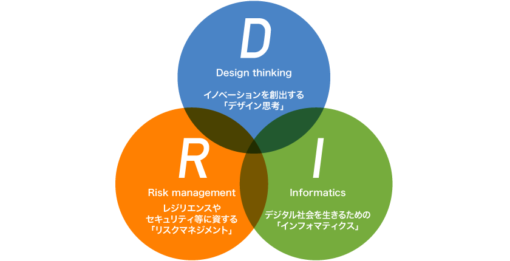

香川大学 創造工学部 情報コースの紹介ページへようこそ！

情報コースについて
香川大学創造工学部情報コースは、新しい社会をデザインできる次世代型の情報技術者の育成を目指すコースです。
情報学の基礎技術を土台として、先端技術とイノベーションの社会実装に対応した2つの専門プログラムを提供し、情報技術を用いて新しい社会をデザインできる次世代型の情報技術者を育成します。
また、情報コースは令和7年度に新設され、コース内に2つの専門プログラム（情報システム・セキュリティプログラム＆情報社会プログラム）を設けて高度情報専門人材を養成することにしました。
情報コースでは、「人工知能」はもちろん、コンピュータの基本的構成やデータ構造とアルゴリズムなどの「情報学基礎」、グローバルなネットワークによるクラウドやビッグデータに対応した「情報基盤構築技術」、高い信頼性や安全性を確保する「セキュリティ技術」、利用者の立場で情報システムが設計・開発できる「情報システム設計・開発技術」に加えて、実社会が抱える課題を正しく理解し、当該分野のみならず他分野を専門にする者と一緒にそれらを解決できる次世代の情報技術者を養成します。
新設による変更点
定員
情報コースは、2025年4月から40名から70名へと定員が増えました。
学生の人数が増えたことにより、多様な背景や興味を持った学生が集まることで、互いに刺激を与えあい、学びが深まります。
また、多様な価値観や興味を持つ人が増えることで、自分に合った仲間と出会えます。
カリキュラム
3年時に、「情報システム・セキュリティプログラム」と「情報社会プログラム」の2種類の専門的な教育プログラムのいずれかを選択できるようになります。
「情報システム・セキュリティプログラム」では、情報システムを支えるための基盤となる技術を開発できる技術者を目指せます。
「情報社会プログラム」では、情報技術を用いて新しい社会をデザインできる技術者を目指せます。
授業の選択肢
- 情報社会実験Ⅰ・Ⅱ
- 情報ビジネスデザイン
- 情報とビジネス
- サービス指向開発
- データマイニング
教員・研究室
香川大学創造工学部・情報コースには、AI、情報セキュリティ、Webシステム、ヒューマンインタフェースなど多彩な分野の専門家が集まっており、高度な知識と実践力を学生に提供しています。
これらの教授たちは国内外の学会発表や論文執筆・企業連携プロジェクトなどを通じて、常に最先端の技術と現場のニーズを反映した教育を行っています。
教授陣は、自然言語処理やビジネスモデル構築、VRを活用した認知科学、ソフトウェア工学など、それぞれが強みを活かした教育・研究を展開。
学生は自分の関心に合わせて研究室を選ぶことができ、少人数制でじっくり学べる環境が整っています。
また、研究室ではDX推進支援システムや教育支援ツール、防災情報の可視化など、地域社会のリアルな課題に情報技術でアプローチする機会も豊富。
理論だけではなく、本物のITのプロフェッショナルから学べる環境があるため、「社会で使える力」を身につけられるのが情報コースの大きな魅力です。
地域の企業との連携
情報コースでは、香川県内の企業や自治体と連携し、地域課題の解決に取り組む実践型プログラムを多数展開しています。
学生は、地元企業のIT活用支援や業務改善、観光振興、地域資源のデジタル化など、リアルな課題に情報技術で挑戦する経験を積むことができます。
たとえば、「瀬戸内地域活性化プロジェクト」では、商店街の情報発信や離島の観光資源のデザインなど、地域の魅力を引き出す活動を実施。
また、企業との合同ワークショップやインターンシップを通じて、社会人と協働する力や課題解決力を育てています。
こうした地域連携は、学生にとって「学びを社会につなげる」貴重な機会となり、卒業後の進路選択にも大きな影響を与えています。
DRI教育

DRIとは？
DRIは「Design thinking(デザイン思考)」「Risk management(リスクマネジメント)」「Informatics(インフォマティックス)」
の略で、未来の最先端技術者になれるように「課題発見・解決力」「リスクに強い判断力」「情報活用能力」をバランスよく育てる、香川大学にしかない教育です。
DRI教育の特徴
- 実社会で役立つスキルが学べる
「身近な課題をどう解決するか？」などを考える授業が中心で、グループワークや地域フィールドワークもあり実践的です。
- 学生の挑戦を支援する制度あり
意欲ある学生向けに「DRIイノベーター育成プログラム」を用意し、学外の課題解決プロジェクトにも参加可能です。
情報コースとDRI
香川大学創造工学部情報コースではAI、データサイエンス、ネットワーク、ソフトウェア設計などの専門技術を学べ、
専門技術とDRI教育と関連付けてさらに学んだ知識を深めることができます。
D(デザイン思考)→ユーザー視点でシステムやアプリを設計できるようになります。
R(リスクマネジメント)→セキュリティや倫理的問題への配慮ができる技術者になれます。
I(インフォマティクス)→情報の読み解き方・活用法を実践的に学習できます。
香川大学創造工学部情報コースは、専門知識+DRI教育で社会で通用する未来の情報技術者を育成します。DRI教育の香川大学です。
より詳しい情報知りたい人は↓のDRI教育をクリック!
DRI教育